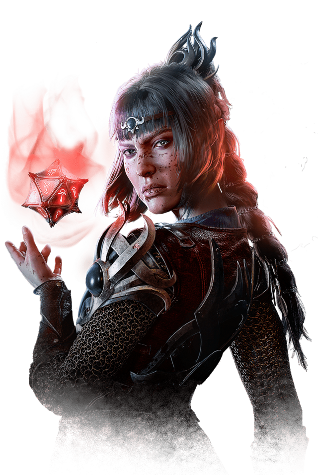
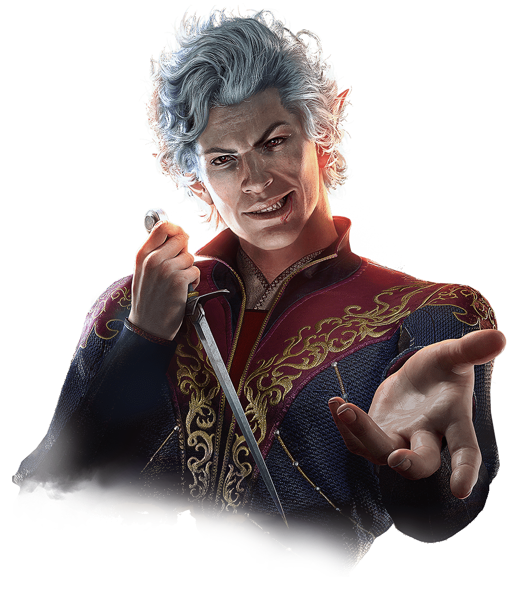
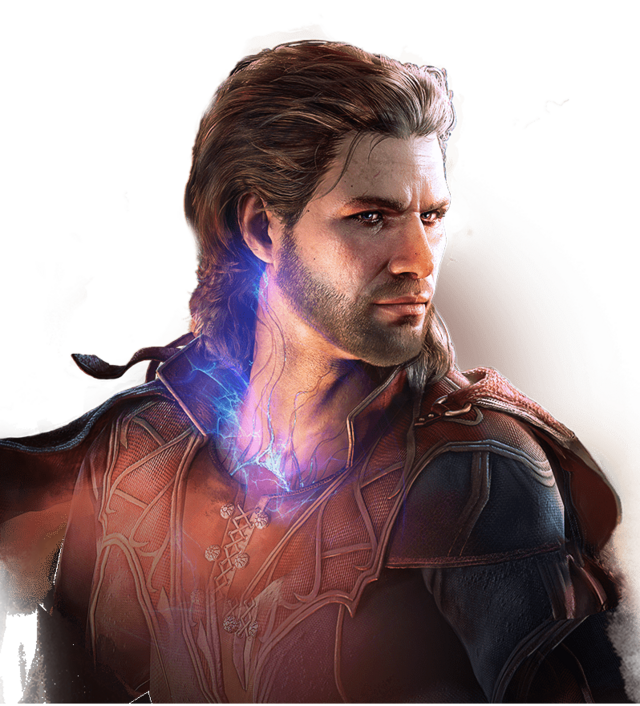
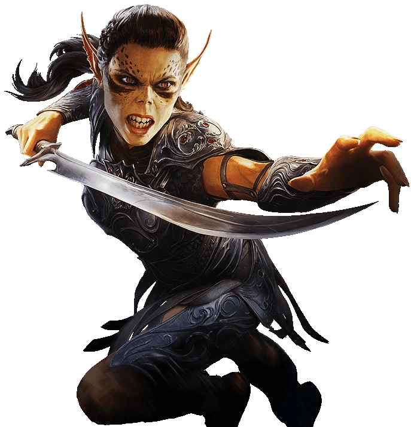
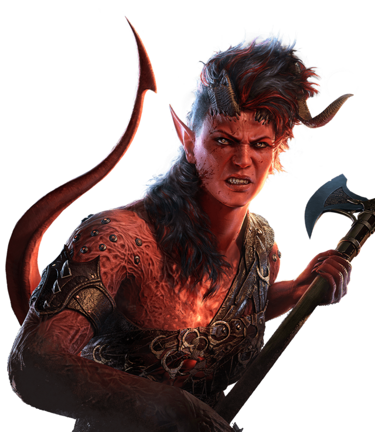
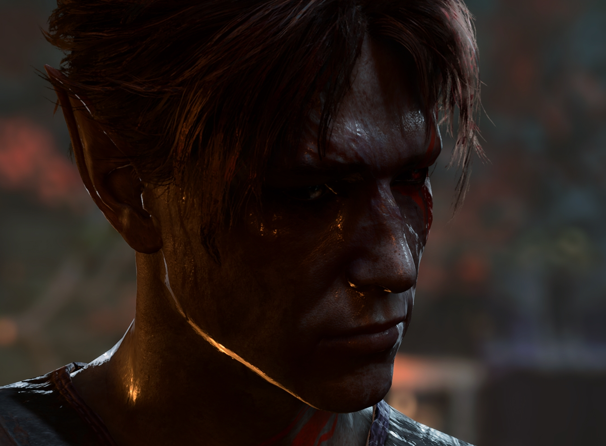
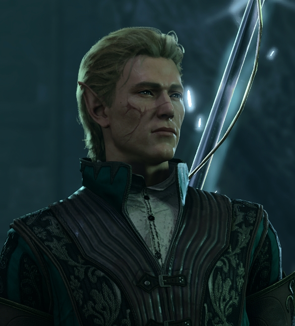

In the mystical realms of Baldur's Gate, companions aren't mere travelers; they're radiant beacons of fate intertwined with your own. Each possesses arcane talents, stirring narratives, and enigmatic depths, illuminating the path to destiny. They're not just allies; they're kindred spirits whose bonds forge an indomitable fellowship against the shadows of the unknown.
Shadowheart, a cleric, wields divine powers and a mysterious past. Her healing and offensive spells aid allies, while her secretive nature and tie to a dark deity add intrigue to her character.

Astarion, a vampire spawn, wields deadly skills and charm. His vampiric abilities, stealth, and rogue expertise make him a formidable ally, while his enigmatic past adds depth to his character.

Gale, a wizard in, commands arcane forces and intellect. His vast knowledge, spellcasting prowess, and pursuit of a cure for his condition make him a valuable asset, while his tragic backstory adds complexity to his persona.

Lae'zel, a githyanki warrior, embodies strength and determination. Her martial prowess, psionic abilities, and quest for power make her a fearsome companion, while her loyalty to her people and disdain for weakness shape her character.

Wyll, a warlock, harnesses eldritch powers and charisma. His pact magic, battlefield control, and pursuit of vengeance against his former patron make him a compelling ally, while his conflicted morality and desire for redemption add depth to his story.

Karlach, a Zariel tiefling Barbarian, seeks revenge after betrayal, fighting in Avernus. Recruited on The Risen Road, she battles foes with fiery passion, yearning for freedom from her infernal heart.


Slava, of House Helcl in Menzoberranzan, seeks solace in Selûne's teachings amid political turmoil. Cursed by the Shadow Creator, he battles inner despair. Escaping to the surface, he journeys, aiding others, determined to find peace and purpose.

Dusty, a High elf from Baldur's Gate, orphaned in political power struggles, delves into eldritch powers and dark sorcery. Seeking strength to restore family honor, he embraces forbidden arts, navigating a treacherous path to reclaim his lineage's lost prestige.